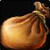
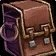
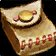
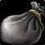
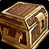

راهنمای دریافت کیف از کوئستها و باسها در WoW: Forever
بازیکنان در WoW: Forever میتوانند با انجام کوئستها و شکست دادن باسهای مشخص، بدون صرف گلد فضای کولهپشتی خود را ارتقا دهند.

در جریان لولآپ در WoW: Forever، به همراه داشتن آیتمهای گوناگون از جمله کانسومبلها، آیتمهای مربوط به کوئستها و لوتهایی که برای کسب Gold به فروشنده فروخته میشوند، فضای کیف را به موضوعی بسیار حیاتی بهویژه در لولهای اولیه تبدیل میکند. شخصیتها در آغاز بازی با دسترسی به کیفهای ۶ اسلاتی در مناطق ابتدایی و ۲۰ اسلات پایه، در مجموع ۴۲ اسلات دارند که با جمعآوری لوتها بهسرعت پر میشود.
با توجه به هزینههای مداوم برای ارتقای مهارتها در هر دو لول یکبار و مواردی چون Dual Spec و یادگیری سوارکاری در لول 40، ممکن است بازیکنان با کمبود گلد مواجه شوند. در کنار دراپهای تصادفی مانند  Large Blue Sack از مابهای جهان بازی، گزینههای تضمینشدهتری از طریق کوئستها و باسها برای افزایش ظرفیت اینونتوری در دسترس قرار دارند.
Large Blue Sack از مابهای جهان بازی، گزینههای تضمینشدهتری از طریق کوئستها و باسها برای افزایش ظرفیت اینونتوری در دسترس قرار دارند.
چهار کوئست جدید در لولهای ابتدایی کیف پاداش میدهند، اما ممکن است انجام انفرادی برخی از این کوئستها به محض دریافت دشوار باشد.
کیفهای حاصل از پاداش کوئستها
| نام کیف | منبع و کوئست |
|---|---|
| پاداش از Buzzbox 525 (لول ۷) | |
 Old Blanchy's Feed Pouch | پاداش از Poor Old Blanchy (لول ۹) |
| Scuffed Shipping Crate | پاداش از Parts and Pieces (لول ۹) |
| Captain Sander's Booty Bag | پاداش از Captain Sander's Hidden Treasure (لول ۱۰) |
| پاداش از Deviate Hides (لول ۱۳) | |
| Hunting Satchel | پاداش از Vyrin's Revenge (لول ۱۵) |
| پاداش از The Night Watch (لول ۱۸) | |
| پاداش از Digging Through the Ooze (لول ۱۹) | |
| Old Toolbox | پاداش از Stepping Stones در خط کوئست Sleeping Bag (لول ۱۴) |
| Spidersilk Pouch | پاداش از Stronger than Steel در Mulgore (لول ۲۹) |
 Explorer's Knapsack | پاداش از Cortello's Riddle (لول ۳۵) |
| پاداش از The Platinum Discs (لول 40) |
کیفهای دراپشده از باسها
علاوه بر کوئستها، برخی باسها در سیاهچالها و محیط بازی دارای شانس دراپ کیف هستند که نرخ بهمراتب بالاتری نسبت به مابهای عادی دارند:

Gnoll Hide Sack از Fedfennel در Elwynn Forest Fel Steed Saddlebags از Fel Steed در Shadowfang Keep
Fel Steed Saddlebags از Fel Steed در Shadowfang Keep
Large Rucksack از Foe Reaper 4000 در Westfall Murloc Skin Bag از Gelihast در Blackfathom Deeps
Murloc Skin Bag از Gelihast در Blackfathom Deeps Snakeskin Bag از Lady Anacondra در Wailing Caverns
Snakeskin Bag از Lady Anacondra در Wailing Caverns
Sturdy Lunchbox از Venture Co. Foreman در Stranglethorn Vale Wayfarer's Knapsack از Ribbly Screwspigot در Blackrock Depths
Wayfarer's Knapsack از Ribbly Screwspigot در Blackrock Depths
استفاده از این پاداشها و هدف قرار دادن باسهای نامبرده، راهکاری مناسب برای جبران کمبود فضا بدون تحمیل هزینههای سنگین در طول مسیر ارتقای شخصیت است.